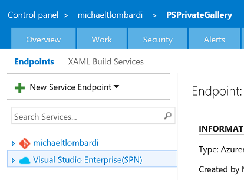

Adding Azure to VSTS
Hopefully, you've generated an Azure Service Principal Account from the Getting Started prerequisites section. If not, you'll need to do so or generate a service principal through other means.
Navigate back to the admin settings for your VSTS project's Service Endpoints - the url should be like https://youraccountname.visualstudio.com/PSPrivateGallery/_admin/_services but with your VSTS account name instead of 'youraccountname'.
From here, you'll want to add an Azure RM Service Endpoint as we did for Github.

Remember that data we saved when creating the Service Principal account?
This is where we're going to use it.
Copy the correct values into the form - the script we used helpfully identifies everything for you.
Make sure to put the password you created for the account in for the Service Principal Key's value.
Click okay, and you should see your Service Principal account added as an endpoint on the left. 
This was a short step - next, we're going to create our build definition!